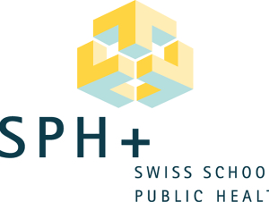

Public Health Reviews – A second journal from the Swiss School of Public Health
We are thrilled to announce that the Swiss School of Public Health (SSPH+) has selected Frontiers to be the official publisher of its second journal,
Public Health Reviews (PHR).
PHR was recently acquired by the school through a transfer in ownership from The Association of Schools of Public Health in the European Region (ASPHER).PHR has a long history of open access, having been published by BMC since 2010, but it now joins the SSPH+’s first journal, the
International Journal of Public Health , to be published by Frontiers from January 2021.The journal is indexed in the Emerging Sources Citation Index (Web of Science), as well as other major databases, and is on track to receive its first Impact Factor in the near future.
PHR is a multi-disciplinary journal with a CiteScore 5.000 (2019), which is dedicated to publishing high quality reviews and policy briefs of importance to public health, locally and globally.Review formats considered include systematic, scoping and more.The peer review model of the journal will be double blind.
The journal will use a co-editor-in-chief model, with three co-editors-in-chief collaborating on the journal.One of the three co-editors-in-chief for the journal is Dr. Raquel Lucas (University of Porto, Portugal).Commenting on the transition of PHR to SSPH+ and Frontiers, Dr. Lucas states:
'This is an opportunity for PHR to strengthen its commitment to publishing high quality reviews of topics of relevance to public health globally that can enhance the visibility of population health research, and be used by professionals, policymakers, students, and civil society organizations to achieve an effective translation of public health research into policy and practice.'
The SSPH+ has recently advertised for a co-editor-in-chief role to share the editorial duties of this exciting and innovative journal.For more information, please see the SSPH+’s announcement here.
Frontiers are proud to partner with the Swiss School of Public Health as the official publisher of both their journals, the
International Journal of Public Health and
Public Health Reviews .
For more information about the journal, please contact: Dr. Anke Berger (Managing Editor): anke.berger@swisstph.ch PHR Editorial Office: PHR@ssph-journal.org
For more information on how your society can collaborate with Frontiers, please contact: Robyn Mugridge (Publishing Partnerships Manager): publishing.partnerships@frontiersin.org
Posted On: 2020-12-02T00:00:00

Content Date: 2020-12-02
Download Date: 2021-07-10
Document ID: L0C04F1TO